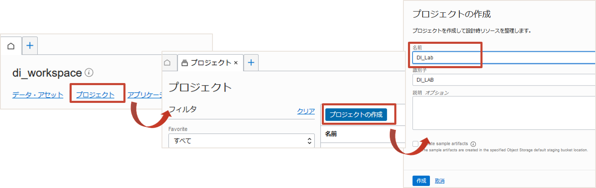
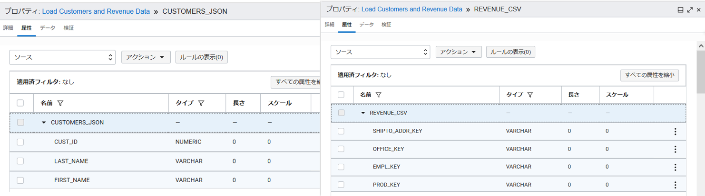
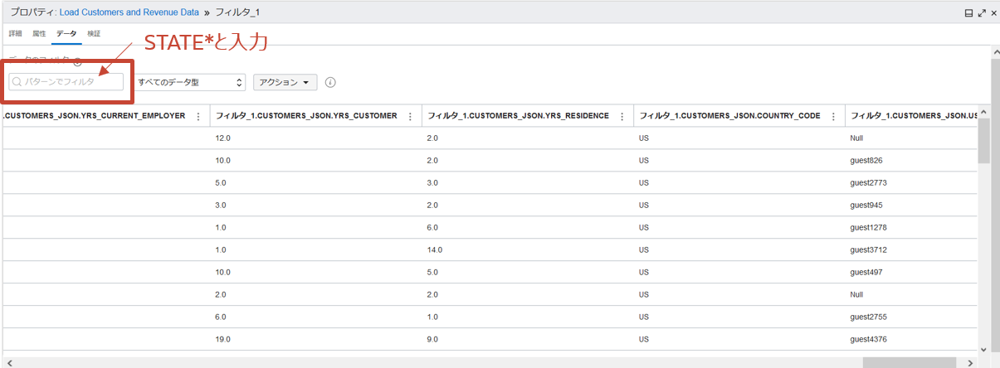
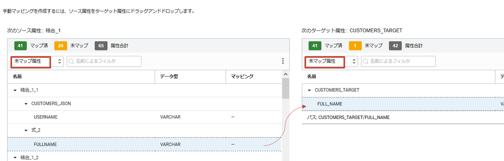

はじめに
OCI Data Integration はOCIで利用できるGUIベースのETLサービスです。

このチュートリアルではオブジェクト・ストレージ上のデータを変換し、Autonomous Databaseにロードを行っていきます。
OCI Data Integrationドキュメントに掲載されているチュートリアルの一部です。

目次 :
- 1.サンプルデータのロードとターゲット表の作成
- 2.Data Integrationを利用するための準備
- 3.ワークスペースの作成
- 4.データ・アセットの作成
- 5.プロジェクトとデータ・フローの作成
- 6.データ・フローの編集
- 7.タスクの作成
- 8.アプリケーションの作成とタスクの公開と実行
前提条件 :
- Data Integrationを利用するコンパートメントを準備してください。
- Autonomous Databaseのエンドポイントはパブリックエンドポイントとしています。
- 画像は最新サービスと異なる可能性があります。
1. サンプルデータのロードとターゲット表の作成
ソースとなるオブジェクト・ストレージにファイルをアップロードし、ターゲットとなるAutonomous Databaseにロード先の表を作成します。
ソース：オブジェクト・ストレージ
オブジェクト・ストレージにサンプルデータをロードします。 バケットを作成し、次の2つのファイルをアップロードしてください。
- ファイルへのリンク : CUSTOMERS.json / REVENUE.csv
バケットの作成とファイルのアップロード手順は“その7 - オブジェクト・ストレージを使う”をご確認ください。

ターゲット：Autonomous Database
Autonomous Databaseインスタンスを作成しユーザーを作成します。手順は“101:ADBインスタンスを作成してみよう”をご確認ください。ユーザー名は任意ですが、このチュートリアルでは、BETAとします。作成したユーザーBETAで以下のSQLでCUSTOMER_TARGET表を作成してください。
CUSTOMERS_TARGET表作成SQL
CREATE TABLE "BETA"."CUSTOMERS_TARGET"
("CUST_ID" NUMBER,
"LAST_NAME" VARCHAR2(200 BYTE),
"FIRST_NAME" VARCHAR2(200 BYTE),
"FULL_NAME" VARCHAR2(200 BYTE),
"STREET_ADDRESS" VARCHAR2(400 BYTE),
"POSTAL_CODE" VARCHAR2(10 BYTE),
"CITY_ID" NUMBER,
"CITY" VARCHAR2(100 BYTE),
"STATE_PROVINCE_ID" NUMBER,
"STATE_PROVINCE" VARCHAR2(100 BYTE),
"COUNTRY_ID" NUMBER,
"COUNTRY" VARCHAR2(400 BYTE),
"CONTINENT_ID" NUMBER,
"CONTINENT" VARCHAR2(400 BYTE),
"AGE" NUMBER,
"COMMUTE_DISTANCE" NUMBER,
"CREDIT_BALANCE" NUMBER,
"EDUCATION" VARCHAR2(40 BYTE),
"EMAIL" VARCHAR2(416 BYTE),
"FULL_TIME" VARCHAR2(40 BYTE),
"GENDER" VARCHAR2(6 BYTE),
"HOUSEHOLD_SIZE" NUMBER,
"INCOME" NUMBER,
"INCOME_LEVEL" VARCHAR2(20 BYTE),
"INSUFF_FUNDS_INCIDENTS" NUMBER,
"JOB_TYPE" VARCHAR2(200 BYTE),
"LATE_MORT_RENT_PMTS" NUMBER,
"MARITAL_STATUS" VARCHAR2(8 BYTE),
"MORTGAGE_AMT" NUMBER,
"NUM_CARS" NUMBER,
"NUM_MORTGAGES" NUMBER,
"PET" VARCHAR2(40 BYTE),
"PROMOTION_RESPONSE" NUMBER,
"RENT_OWN" VARCHAR2(40 BYTE),
"SEG" NUMBER,
"WORK_EXPERIENCE" NUMBER,
"YRS_CURRENT_EMPLOYER" NUMBER,
"YRS_CUSTOMER" NUMBER,
"YRS_RESIDENCE" NUMBER,
"COUNTRY_CODE" VARCHAR2(2 BYTE),
"ORDER_NUMBER" NUMBER,
"REVENUE" NUMBER
) ;
2.Data Integrationを利用するための準備
Data Integrationを利用するためには以下が必要です。
- VCNとサブネットの作成
- 必要なポリシーの作成
VCNとサブネットの作成
Data Integrationからプライベート・ネットワーク上のデータソースにアクセスするためにはVCNの構成が必要です。Data Integrationで利用するコンパートメントでVCNとサブネット(リージョナル）を作成します。手順は“その2-クラウドに仮想ネットワーク(VCN)を作る”をご確認ください。作成したサブネットから利用するAutonomous Database、オブジェクト・ストレージへ接続可能である必要があるため、サービス・ゲートウェイをターゲット・タイプに含めるルート・ルールをルート表に追加します。

Data Integrationとデータソースの場所別のケース例についてはOracle blogsの記事“Understanding VCN Configuration for Oracle Cloud Infrastructure (OCI) Data Integration”を参考にしてください。
必要なポリシーの作成
ポリシーを作成します。 OCI管理者ユーザーでログイン後、OCIコンソールのナビゲーションメニューでアイデンティティとセキュリティに移動し、ポリシーを選択します。次にコンパートメントを選択し、ポリシーの作成をクリックします。
本文書ではポリシー・ビルダーを使用しますが、実際は必要なセキュリティにあわせて設定を行ってください。Data Integrationのポリシーおよびポリシーの例はドキュメントをご確認ください。

ポリシーの作成で名前と説明を入力し、ポリシー・ビルダーのポリシー・ユース・ケースからデータ統合を選択します。

共通ポリシー・テンプレートから以下を選択し、ポリシーを作成します。
- ユーザーがネットワーキングを含むワークスペースを作成および管理できるようにします
- 仮想ネットワーク内のワークスペースを作成、削除および変更する機能を許可
- 許可をするグループとコンパートメントの指定が必須。
- ユーザーにワークスペース内のオブジェクトの検索を許可
- 指定ワークスペースでデータ統合のコンポーネント検索を許可
- テナンシレベルでのみ定義可
- ユーザーおよびリソース・プリンシパルに指定ワークスペースのオブジェクト・ストレージへのアクセスと使用を許可
- Data Integrationがソース/ターゲットにオブジェクト・ストレージを利用することを許可
- 許可をするグループとコンパートメントの指定が必須
- ユーザーおよびリソース・プリンシパルに指定ワークスペースのターゲットとしてAutonomous Databaseへのアクセスと使用を許可
- Data Integrationがソース/ターゲットにAutonomous Databaseを利用することを許可
- 許可をするグループとコンパートメントの指定が必須
テンプレートごとにポリシーが作成されるため、ポリシーは4つ作成されます。
3. ワークスペースの作成
ワークスペースはすべてのData Integrationリソースのコンテナです。Data Integrationの操作はワークスペースを作成し、起動して行います。
OCIコンソールのアナリティクスとAIからデータ統合を選択し、ワークスペースの作成を選択します。

名前に任意の名前を入力します。デフォルトでプライベート・ネットワークの有効化にチェックがされていますので、2で作成したVCNとサブネットを選択します。その後に作成をクリックします。
プライベート・ネットワークにあるデータ・ソースにアクセスするためにはプライベート・ネットワークの有効化が必要です

作成状況はステータスの表示で確認することができます。作成完了まで10分～15分程度かかります。

作成が完了したワークスペースのステータスはアクティブです。ワークスペース名をクリックしホームを表示します。

ワークスペースのホームを起点に、Data Integrationで必要なコンポーネントの作成、設定を行っていきます。
4. データ・アセットの作成
データ・アセットはData Integrationで利用するデータ・ソースを表します。1のオブジェクト・ストレージとAutonomous Databaseのためのデータ・アセットを作成します。
ワークスペースのホームのクイック・アクションからデータ・アセットの作成をクリックしましよう。 データ・アセットの作成では、タイプを選択し、タイプに合わせた項目を入力していきます。

オブジェクト・ストレージ用、Autonomous Database用で以下のとおり入力し、作成します。 作成前にテスト接続で接続のテストを実行することが可能です。
- オブジェクト・ストレージ
- 名前：Data_Lake
- 識別子：自動入力
- タイプ：Oracle Object Storage
- テナントOCID : コンソールのガバナンスと管理からテナンシ詳細を選択し、テナンシ情報のOCIDを確認

- ネームスペース：自動入力
- OCIリージョン: 利用するオブジェクト・ストレージのリージョン名
- 例：ap-tokyo-1
- Autonomous Database
- 名前：Data_Warehouse
- 識別子：自動入力
- タイプ：Oracle Autonomous Data Warehouse
- 資格証明の設定の選択 : ウォレットのアップロードを選択しウォレットファイルをアップロード
- 接続サービスの選択：ウォレットファイルのアップロードにより自動的に表示される接続サービスの中から選択
- デフォルトの接続情報： ユーザー名 BETA、パスワード BETAのパスワード
- デフォルトのステージングの場所 :
- データ・アセット : Data_Lake
- 接続 : デフォルトの接続
- コンパートメント : <1で作成したバケットのコンパートメント>
- スキーマ : <1で作成したバケット>
それぞれの入力イメージです。

5. プロジェクトとデータ・フローの作成
プロジェクトは設計に関わるリソースのコンテナです。データ・フローはプロジェクトの下で作成されるソース・システムとターゲット・システム間のデータの流れ/操作を定義するリソースです。プロジェクトを作成し、データ・フローを作成していきます。
プロジェクトの作成
ホーム画面からプロジェクトをクリックしプロジェクトの作成をクリックします。プロジェクトはDI_Labという名前で作成します。

データ・フローの作成
プロジェクトのメニューでデータ・フローを選択します。データ・フローの作成をクリックするとデータ・フロー・エディタというビジュアルエディタが起動します。
表示されるプロパティで名前を”新規データ・フロー”からLoad Customers and Revenue Dataに変更しましょう。

データ・フロー・エディタのレイアウトは以下の通りです。

基本的な使い方は演算子ペインから利用する演算子をキャンパスにドラッグアンドドロップし、プロパティを編集していくことで操作を定義していきます。 1つずつ設定していきましょう。
一度ここで保存（新規作成の場合は作成）をクリックし、保存します。
設計時は保存をこまめにしていただくことをおすすめします。
6.データ・フローの編集
データ・フロー・エディタで演算子を使って定義を行っていきます。
ソースの追加
左からソース演算子をキャンバスにドラッグアンドドロップし、選択します。下にプロパティが表示されますので、オブジェクト・ストレージ上のファイルにあわせて設定していきます。
プロパティではデータ・アセットの項目から順に、選択リンクをクリックし、該当する値を選択していきます。上の項目で指定した値に応じて、下の項目の選択リストが自動的に絞り込まれて表示されます。

画像の演算子はソース_1と日本語表記ですが、現在はSOURCE_1と英語表記です。以降の演算子の画像も同様です。
CUSTOMERS.json、REVENUE.csvの2つのファイルがソースとなるため、ソース演算子は2つ必要です。プロパティの項目に以下の値を入力し、他の値はデフォルトのままにします。
識別子の値はデータ・エンティティで選択した値で自動入力されます。任意に入力も可能です。
- 識別子 : CUSTEOMERS_JSON(以下を設定後自動入力されます)
- データ・アセット : Data_Lake
- 接続 : Default Connection
- スキーマ : <バケット名>
- データ・エンティティ : CUSTOMERS.json
- ファイル・タイプ : JSON
- 識別子 : REVENUE_CSV(以下を設定後自動入力されます)
- データ・アセット : Data_Lake
- 接続 : Default Connection
- スキーマ : <バケット名>
- データ・エンティティ : REVENUE.csv
- ファイル・タイプ : CSV
入力が完了するとCUSTOMERS_JSONとREVENUE_CSVというソースがキャンバス上に表示されます。それぞれプロパティの属性タブでデータの構成を確認することができます。

データタブではデータのプレビューができます。属性（列）を選択するとその属性のプロファイルが自動的に行われ、右側に表示がされます。

検証タブはすべての演算子に共通に存在し、演算子に関わる検証を行いその結果を表示します。
データのフィルタ
ソースから以下の条件でデータをフィルタ（絞り込み）します。
- CUSTOMERS_jsonのCOUNTRY_CODEの値が”US”
- REVENUE_csvのORDER_STATUSの値が”1-Booked”
CUSTOMERS_jsonのCOUNTRY_CODEの値が”US”のフィルタを設定
- フィルタ演算子をキャンパスにドラッグアンドドロップします。
-
ソースのCUSTOMERS_JSONにカーソルをおき、表示される丸い形のコネクタを追加したフィルタにドラッグアンドドロップします。

- フィルタのプロパティでフィルタ条件の作成をクリックします。
-
条件ビルダーの受信から属性COUNTRY_CODEをエディタにドラッグアンドドロップします。

-
条件を以下のように修正し、作成をクリックします。
FILTER_1.CUSTOMERS_JSON.COUNTRY_CODE='US'
REVENUE_csvのORDER_STATUSの値が”1-Booked”のフィルタを設定
CUSTOMERS_JSONをREVENUE_CSV、COUNTRY_CODEをORDER_STATUSで置き換えて、CUSTOMERS_jsonのフィルタ設定の1～4までの手順を行います。
5の条件を以下の記載にします。
FILTER_2.REVENUE_CSV.ORDER_STATUS='1-Booked'
設定後のキャンバスは各ソースにフィルタが続く形になります。

保存をクリックしてここまでの作業を保存します。
データの変換
フィルタ後のCUSTOMERS_JSONデータに対して以下の変換を行います。
- STATE_PROVINCEの値を大文字に変換
- FIRST_NAMEとLAST_NAMEを連結させたFULLNAMEという属性を生成
STATE_PROVINCEの値を大文字に変換
STATE_PROVINCEの値が小文字の場合は大文字に変換させます。FILTER_1のプロパティでデータタブを選択し、検索ボックスにSTATE*と入力します。
フィルタ後なのでCOUNTRY_CODEがUSのデータのみが表示されます

各属性には・が縦に3つ並んだメニューボタンがあります。STATE_PROVINCEのボタンをクリックし大/小文字の変更を選択し、設定を行います。 大文字に変更するため、タイプには大文字を選択し、他はそのままにします。

適用をクリックすると、キャンバスに大文字に変換するための式を持った式演算子が自動的に追加されます。

FULLNAME属性の生成
次にFIRST_NAMEとLAST_NAMEを連結させたFULLNAMEという属性を新しく生成します。 左の演算子ペインから式演算子をキャンバスにドラッグアンドした後、式演算子(EXPRESSION_1)にカーソルを置き、表示されたコネクタを追加した式演算子(EXPRESSION_2)にドラッグアンドドロップします。

プロパティで、式の追加をクリックします。識別子にFULLNAME、長さに200と入力します。
次に式ビルダーでファンクションタブからCONCATを右のエリアにドラッグアンドドロップします。

結果が”FIRSTNAME LASTNAME”となるようにCONCAT式を以下のように編集し、追加をクリックします。
CONCAT(CONCAT(EXPRESSION_1.CUSTOMERS_JSON.FIRST_NAME, ' '),EXPRESSION_1.CUSTOMERS_JSON.LAST_NAME)
式の変数をダブルクリックで選択し、受信タブに表示されている属性をダブルクリックするとその変数に属性を代入することができます。

保存をクリックしてここまでの作業を保存します。
データの結合
変換をかけたCSVデータとJSONデータをキーで結合します。結合演算子をキャンバスにドラッグアンドドロップし、各ソースの終端の演算子のコネクタを結合演算子にドラッグアンドドロップします。

追加した結合演算子（JOIN_1)のプロパティで結合条件の作成をクリックします。条件ビルダーで受信タブから属性をドラッグアンドドロップして、CUSTOMER_JSONのCUST_IDとREVENUE_CSVのCUST_KEYの結合になるよう編集し、作成をクリックします。
JOIN_1_1.CUSTOMERS_JSON.CUST_ID = JOIN_1_2.REVENUE_CSV.CUST_KEY

ターゲットの設定
ターゲット演算子をキャンバスにドラッグアンドドロップします。JOIN_1のコネクタをターゲットにドラッグします。

ターゲットはAutonomous Databaseです。以下の値を設定します。
- 識別子 : CUSTOMERS_TARGET(以下を設定すると自動入力されます)
- 統合戦略 : 挿入（デフォルトのまま）
- データ・アセット : Data_Warehouse
- 接続 : Default Connection
- スキーマ : BETA
- データ・エンティティ : CUSTOMERS_TARGET
- ステージングの場所 : データ・アセットを作成するときにデフォルトで指定したバケットが自動入力されます。デフォルトのステージングの場所を指定していない場合は手動で設定します。

次に入力属性とターゲットとのマッピングを確認します。プロパティのマップタブをクリックします。

デフォルトですべての属性は名前で自動的にマッピングされ、マップ済みに分類されます。例えばソース属性のCUST_IDはターゲット属性のCUST_IDにマップされます。
対して、マッピングされていない属性は未マップに分類されます。それらに対しては手動でマッピングを行うことができます。
ソース属性のFULLNAMEとターゲット属性のFULL_NAMEをマッピングしましょう。ソース属性、ターゲット属性ともに未マップ属性のみを表示させ、ソース属性のFULLNAMEをターゲット属性のFULL_NAMEにドラッグアンドドロップをしてマッピングします。

マッピング・ルールはマップタブの右上にあるプルダウン・メニュールールの表示で確認することができます。アクションではマッピング・ルールの設定ができます。

検証と保存
作成したフローに対して検証をクリックしてエラーや警告がないかを確認します。エラーや警告がある場合は、その要因となった演算子が表示されますので、確認し対処を行います。

検証で問題がないことを確認後保存します。
7. タスクの作成
タスクはデータに対する一連のアクションを指定するリソースです。タスクには種類がありますが、データ・フローを呼び出す場合は統合タスクを利用します。
プロジェクトDI_Labの詳細からタスクを選択後、タスクの作成をクリックし表示されるプルダウンメニューから統合を選択します。 統合タスクの作成では以下を設定します。
- 名前：Load Customers lab
- データ・フロー：選択リンクをクリックし、Load Customers and Revenue Dataを選択します
データ・フローを選択をすると自動的に検証が行われます。検証の成功を確認し、Create and Closeをクリックします。

8. アプリケーションの作成とタスクの公開と実行
アプリケーションはタスクを実行するコンテナです。タスクはアプリケーションに公開し、アプリケーションから実行します。
アプリケーションの作成
ホームタブを選択し、クイック・アクションからアプリケーションの作成をクリックします。
アプリケーションの作成では名前をLab Applicationと入力し、作成をクリックします。

タスクをアプリケーションへ公開
アプリケーションが作成できたので、タスクを公開します。
プロジェクトDI_Labの詳細からタスクを選択し、作成済みのタスクLoad Customers labの右端の3つの点が縦に並ぶメニューボタンからアプリケーションに公開を選択します。公開するアプリケーション名にプルダウン・メニューからLab Applicationを選択して、公開をクリックします。

タスクを公開するとアプリケーションLab Applicationにパッチという形で更新が行われます。進行状況はアプリケーションの詳細にあるパッチから監視できます。リフレッシュをクリックし、ステータスが成功になれば公開完了です。

タスクの実行
公開されたタスクはアプリケーションの詳細のタスクの下に表示され、右端のメニューボタンから実行を選択することができます。 公開したLoad Customers Labを実行しましょう。

実行すると自動的にアプリケーションの詳細の実行に遷移します。リフレッシュをクリックすることで進捗ステータスを確認することができます。

またタスク名をクリックすると、タスクの過去5回の実行比較や平均実行時間や最大/最小ランタイムの確認が可能です。

実行でエラーが生じた場合のログもこちらから確認ができます。以下の例ではデータベースの表領域を使用する権限がなかったためということがわかります。

おわりに
オブジェクト・ストレージからデータベースへデータをフィルタ、変換、結合してロードする統合タスクのチュートリアルを紹介しました。 LiveLabsのワークショップでは複数のタスクの組み合わせおよび連携させるパイプライン機能やスケジュール機能を体験できます。そちらもぜひご活用ください。
参考資料
- マニュアル『Data Integration』
- LiveLabs 『Introduction to Oracle Cloud Infrastructure (OCI) Data Integration Workshop』
- LiveLabsの使い方(参考）『103: Oracle LiveLabsのご紹介(Database Actions)』
- Oracle Cloud Infrastructure Data Integration Blog（英語）
Tips
- 演算子の条件や式にマルチバイト文字が含まれている場合に検証でエラーが発生する場合があります。その場合は言語を英語に変更しエラーを回避できるかご確認ください。言語はOCIコンソールの右上の地球のマークをクリックすることで変更が可能です。